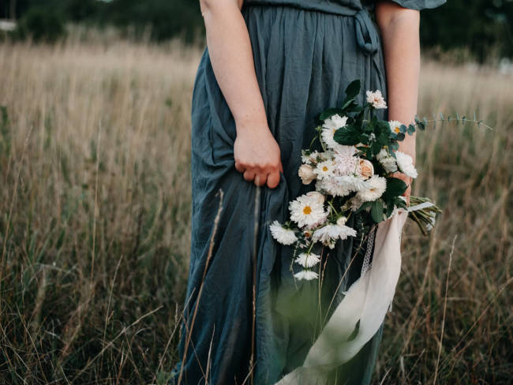
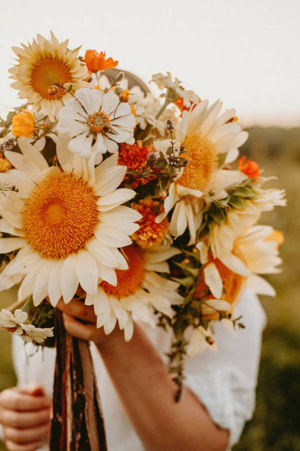
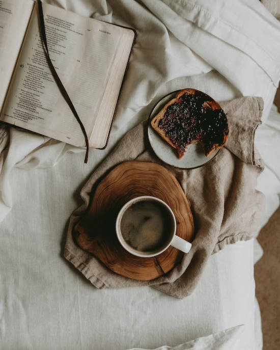

Hoje é dia 14/12 do mês de dezembro, faz 3 dias que comecei o curso de HTML5 E CSS3. Eu poderia ter me esforçado e me dedicado mais, mas estou trabalhando nisso.
Aqui vou colocar o que aprendi até aqui com o curso! Vou começar colocando alguns caracteres especiais:
♠
♣
♥
⋄
Agora vou colocar alguns emojis maneiros, maneiros pra mim...
🍝
🍲
🥩
🍗
🥓
🌭
🍕
🥞
Bom essas são algumas das comidas que adoro, claro que tem muito mais 😋 mas se eu colocar tudo, vou ficar aqui eternamente.
Existem muitas coisas mais que um 🤓 necessita para viver né, como um 💻🎮📖 e claro né o ☕ mas enfim ja usei bastante emojis por hj.
Aqui vou usar algumas imagens que vou pegar do pexels. com e do unsplash.com vou usar o gimp para deixar as imagens do tamanho ideal para esse teste, vou utilizar nos tamanhos de 650, 550 e 500 de largura.
A primeira imagem é linda, me traz um ar de tranquilidade e leveza. Imagem jpg modificada no gimp no tamanho de 650 de largura.
A segunda imagem é um buque de flores muito bonito, lembra algo antigo e as cores são muito lindas também, imagem jpg no tamanho de 550 de largura.
A terceira e última imagem colocada de imagens salvas é no tamanho 500 de largura e é um prato de pão com geléia e café, encima de uma cama, ao lado de um livro e me deu muita vontade de estar nesse cenário.
Aqui tenho minha ultima imagem importada por URL, externa ... Mais uma cena que me define muito

E agora o último conteúdo que aprendi foi colocar favicon no meu site zinho, só que não coloco aqui, vou colocar lá encima do tittle com a opção link favicon... 😁